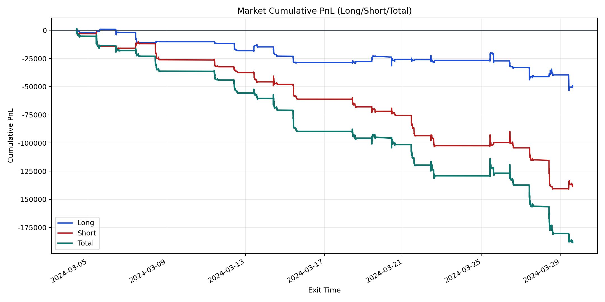
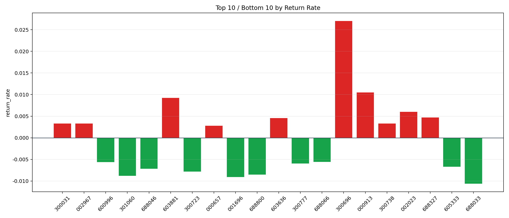

| repo_root | /home/haoranyou/data/output/dynamic_AUM_TAKER_index1000 |
|---|---|
| period_months | 1 |
| period_label | 2024-03-04_to_2024-03-29 |
| start_time | 2024-03-04 09:49:02 |
| end_time | 2024-03-29 14:36:02 |
| n_trades | 9608 |
| n_symbols | 203 |
| total_pnl | -187833.86455 |
| long_total_pnl | -49041.90229999875 |
| short_total_pnl | -138791.96225000126 |
| total_entry_notional | 173004465.0 |
| long_entry_notional | 70483906.0 |
| short_entry_notional | 102520559.0 |
| total_return_rate | -0.001085716860255601 |
| long_return_rate | -0.0006957886570588007 |
| short_return_rate | -0.0013537963858546778 |
| top_symbols_by_return | ["300696", "000913", "603881", "002023", "688327", "603636", "300031", "002967", "300738", "000657"] |
| bottom_symbols_by_return | ["688033", "001696", "301060", "688800", "300723", "688046", "605333", "300777", "600996", "688066"] |

